JMX and JAMon
The Java Management Extensions (JMX) technology is a standard part of the Java Platform. With JMX developers can expose and manage their application via any JMX enabled console (Examples of these consoles are jconsole and visualvm).
As of release 2.80 JAMon allows all monitors to be viewed via a JMX console. Some monitors are automatically displayed in the JMX console (for example Garbage Collection metrics), and others would need to be explicitly included (Note: All JAMon data is also viewable via the JAMon war).
A summary of JAMon JMX capabilities follows. There is also a short video that covers most of JAMon's JMX capabilities.
- Log4j - Counts for for Log4j log levels: TRACE, DEBUG, WARNING, INFO, ERROR, FATAL,...
- HTTP Page Requests - Metrics for page hits in a web application. Metrics include count, average time, total time, max time, min time and more.
- HTTP Status Code Summary - A count of http status codes in the general categories 1xx, 2xx, 3xx, 4xx, 5xx.
- SQL - Metrics for SQL statements including select, insert, delete, update and more. Metrics include count, average time, total time, max time, min time and more.
- Exceptions - A count of exceptions thrown by the application. You can also view the most recent stack trace.
- Garbage Collection info (For Oracle JVM's) - Metrics for the garbage collector are automatically stored in JAMon. This allows developers to look at details of the garbage collector without grepping a log. It tracks the following garbage collector metrics: how often it fires, how long it takes, how much memory it frees and more.
- JAMon Custom Metrics - Developers can easily expose any JAMon monitor to JMX by simply adding the monitor label, and units to the jamonapi.properties file.
- Managing JAMon - The following functions can be performed via a JMX enabled gui such as jconsole: Enable/Disable/Reset JAMon monitors
- Deltas - Display how much the JAMon monitors have changed (delta) since the last time the monitor was viewed.
The following image shows the above mentioned JAMon JMX capabilities.
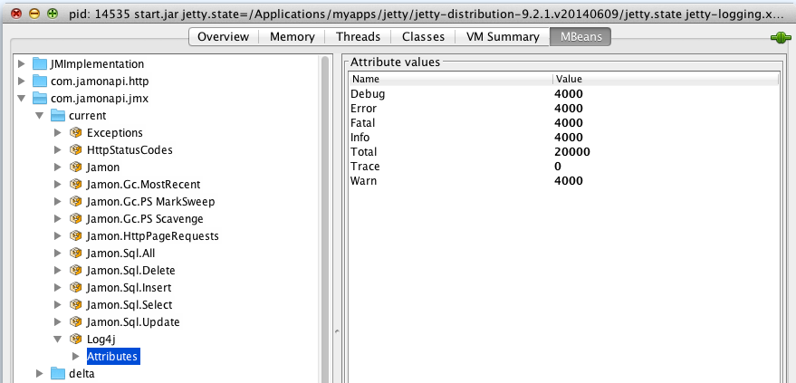
1. Log4j
The above image is an example of the JAMon JMX Log4j data. It shows that each of the log levels were called 4000 times except TRACE, which wasn't called at all. The JAMon log4j appender must be enabled for this data to appear.
2. HTTP Page Requests
This section represents any page hits (jsp, servlet, html, etc) in a web application.
- To enable this capability JAMon http monitoring must be enabled.
- The metrics can either appear as 'Jamon.HttpPageRequests' or a label associated with the server type such as 'Jamon.PageRequests.Jetty' or 'Jamon.PageRequests.Tomcat'. Note: If you are using a different web container you can still track page request metrics by using JAMon Custom Metrics.
- As you can see below the following are tracked for the page requests: hits, average execution time, max execution time and all the other standard JAMon metrics. '_Count08_640_1280ms' contains the count of page hits that took between 640 and 1280 ms. The same principal applies to the other similarly named fields.

3. HTTP Status Code Summary
The example below shows how the frequency of returned http status codes from the web server.
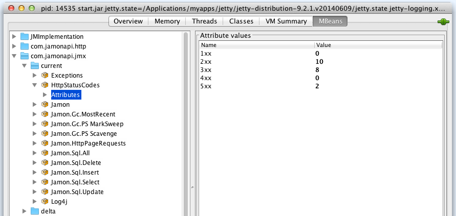
4. SQL
This section represents any SQL commands executed by the application.
- To enable this capability SQL monitoring must be enabled.
- There will be a JMX entry for each of the following SQL commands: select, insert, update, delete. There is also one for 'All' which aggregates all SQL commands.
- As you can see below the following are tracked: hits, average execution time, max execution time and all the other standard JAMon metrics. '_Count08_640_1280ms' contains the number of SQL commands that took between 640 and 1280 ms. The same principal applies to the other similarly named fields.
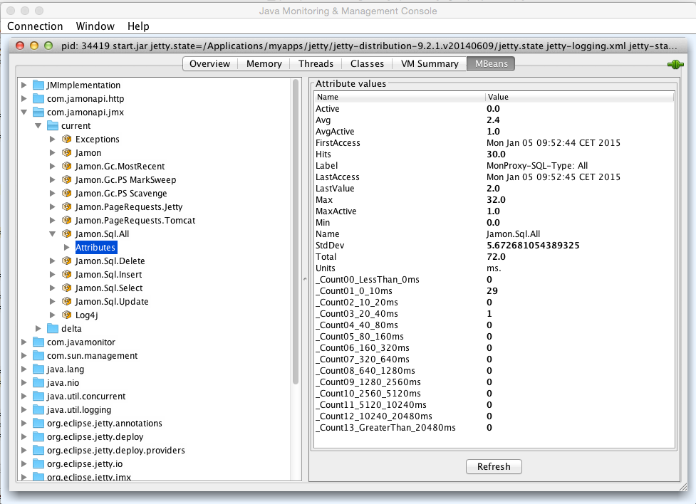
5. Exceptions
This section represents any Exceptions thrown by the application.
- To enable this capability one of the JAMon capbilities that tracks exceptions must be enabled. This includes SQL, HTTP Page Request, interface monitoring, or Sring AOP monitoring.
- As you can see below the following are tracked:
- Count of exceptions,
- The most recent stacktrace,
- When the most recent stacktrace occurred.
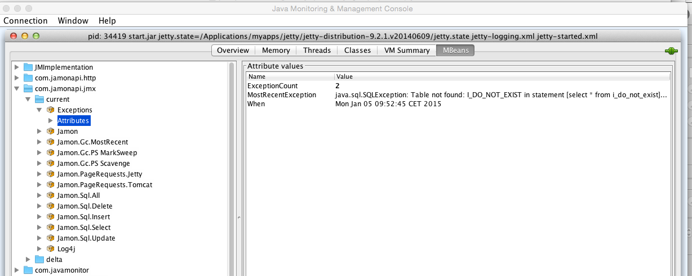
6. Garbage Collection info
This section represents information associated with garbage collection invocations.
- This capability only works for the Oracle JVM
- The following metrics are tracked for the most recent GC firing: duration in ms., when the invocation occured, metadata associated with he GC firing.
- For each type of GC type (i.e. Scavenge, MarkSweep/Full) detailed metrics are tracked: hits, average execution time, max execution time and all the other standard JAMon metrics.
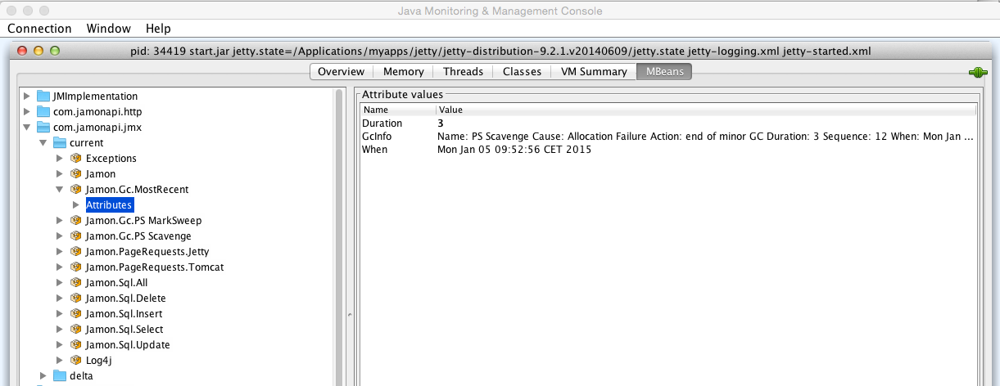
The JMX console also displays aggregate statistics (duration in ms.) for each type of Garbage Colleciton that has occurred (i.e. Scavenge, MarkSweep/Full). An example for 'Scavenge' appears below.
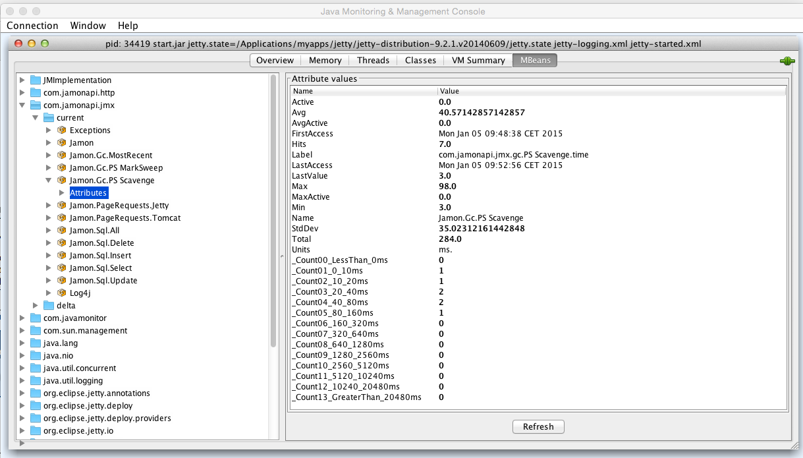
Of course you can also see this informat in the JAMon web application. The following shows that a MarkSweep collector was invoked 6 times and the Scavenge collector was invoked 8 times.
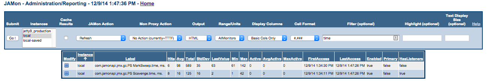
In addition to the aggregates mentioned above, JAMon also tracks the details of each individual GC invocation via JAMon's buffer listener capabilities. Listeners can be configured in the jamonapi.properties file. To configure and view the detailed GC invocation data click on the blue box underneath the 'Modify' column (see above).
Each row in the table below represents details collected for one GC invocation. Some of the data collected is: The duration of the GC invocation (in ms.), memory statistics both before and after the GC invocation (BeforeGc, and AfterGc respectively).
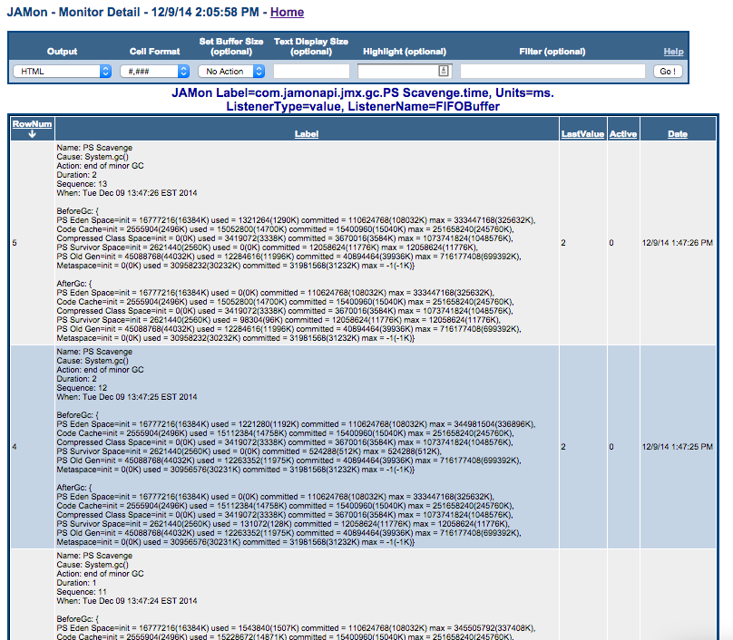
In addition to tracking the frequency and duration of the GC invocations JAMon JMX also tracks the memory consumed (in bytes) by Java different memory pools after the GC was fired (AfterGc). Note all GC related data shows up in the JAMon display screen if you filter by 'gc'. A snapshot of this data is in the image below.
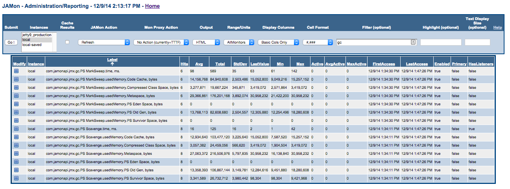
7. JAMon Custom Metrics
Developers can use JAMon's custom JMX metrics capabilities to add any JAMon monitor to JMX. In fact that is exactly how the JMX entries we have discussed that start with 'Jamon.' were added. For example 'Jamon.PageRequests.Jetty' was added this way. To add your own custom JMX monitors simply add them to the jamonapi.properties file. Below you can see how many of the custom metrics discussed in this document are configured. Note each custom metric has to have the exact JAMon monitor label and units (comma delimited). Optionally if you would like the JMX label to appear with a different (more readable) name in JMX then this can also be provided. By convention the name should start with 'Jamon.'.
Note if you provide one custom JAMon JMX monitor then you are taking ownership of ALL custom monitors. This means that if you would like any of the other 'Jamon.' custom JMX metrics discussed above to still appear they must also be in the jamonapi.properties file.
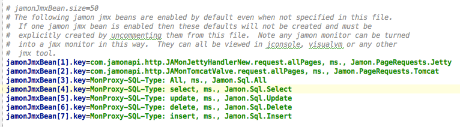
8. Managing JAMon
The 'Jamon' JMX bean allows developers to enable/disable JAMon, view the JAMon version and reset JAMon data via the 'reset' Operation.
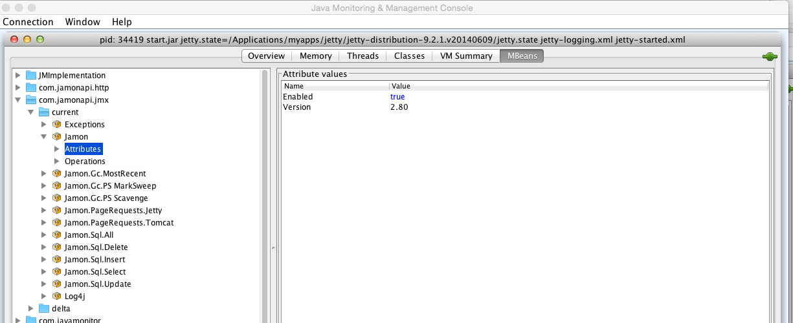
9. Deltas
Normally JAMon numbers continually grow. The 'Delta' capability allows a developer to determine how much the JAMon metrics have changed since the last time they were checked. All 'Delta' JMX beans reside within the 'deltas' jmx directory structure as seen below.
For example the 'refresh' button was clicked on the Log4j Delta JMX bean below and it indicates that most log methods were called 2,000 times since the Delta 'refresh' button was last clicked. If the 'refresh' button was clicked again and no log methods had been called in between refreshes then all the numbers would be 0.
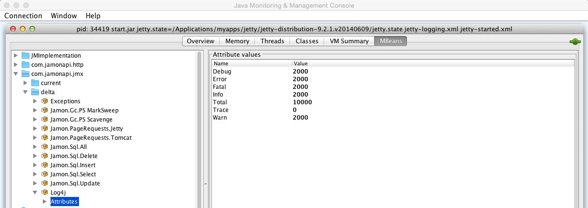
The following shows changes in jetty page hits since the 'refresh' button was last clicked. So 3 page hits occurred during this time interval, and their average time per invocation was 102 ms.
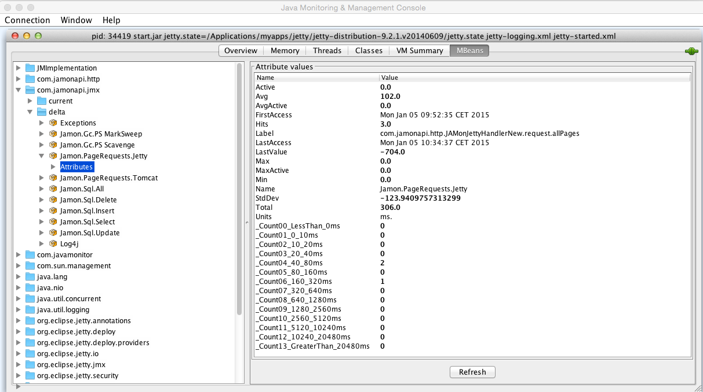